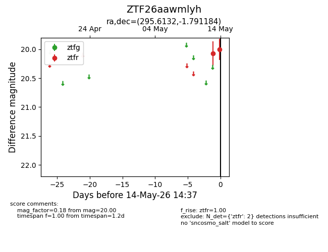
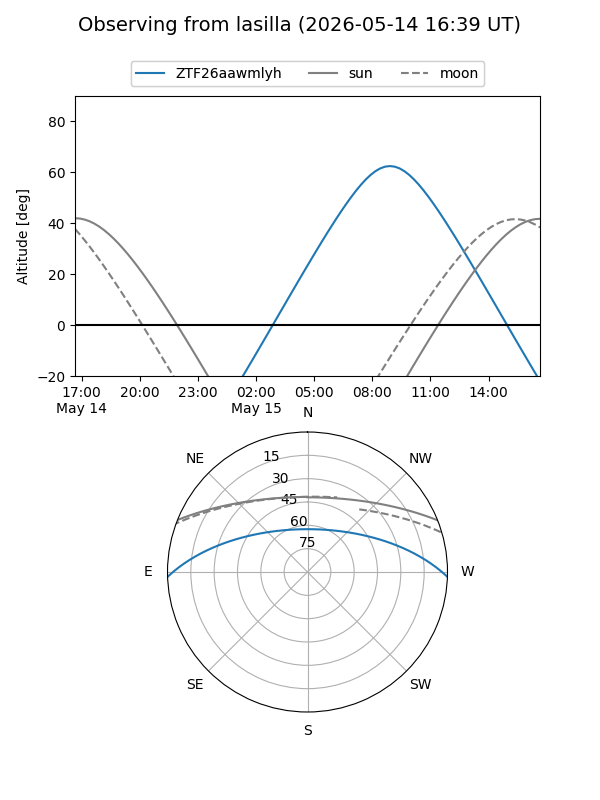
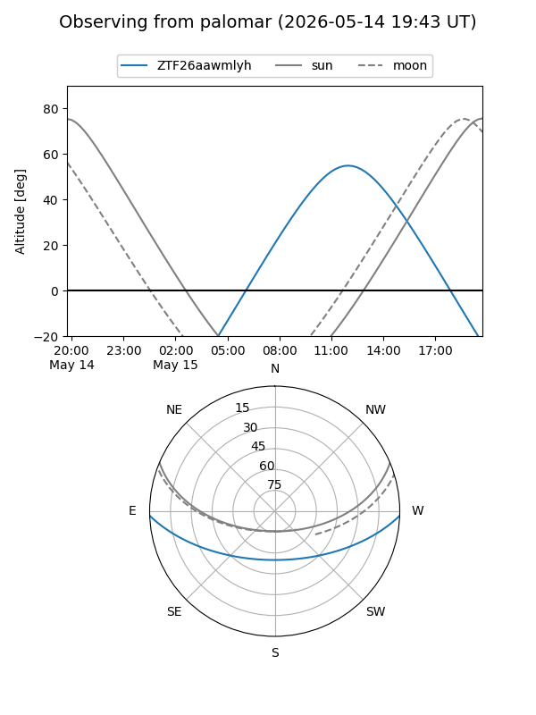
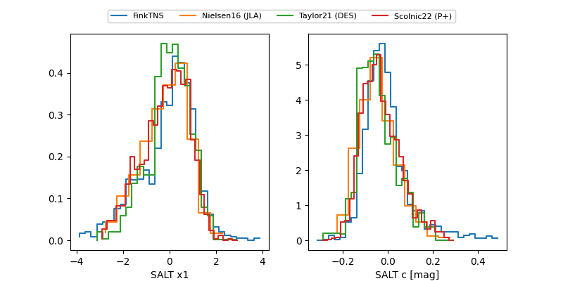

ZTF26aawmlyh
Target ZTF26aawmlyh at 2026-05-14 14:39
Aliases and brokers:
FINK: link
Lasair: link
ALeRCE: link
alt names
ZTF26aawmlyh (ztf,fink_ztf)
Coordinates:
equatorial (ra, dec) = 295.6132,-1.79118
equatorial (HMS+DMS) = 19:42:27.17,-01:47:28.26
galactic (l, b) = (37.2025,-12.15936)
Flags:
Photometry:
last ztfr=20.00
2 ztfr detections
Lightcurve

Visibility


Additional plots
